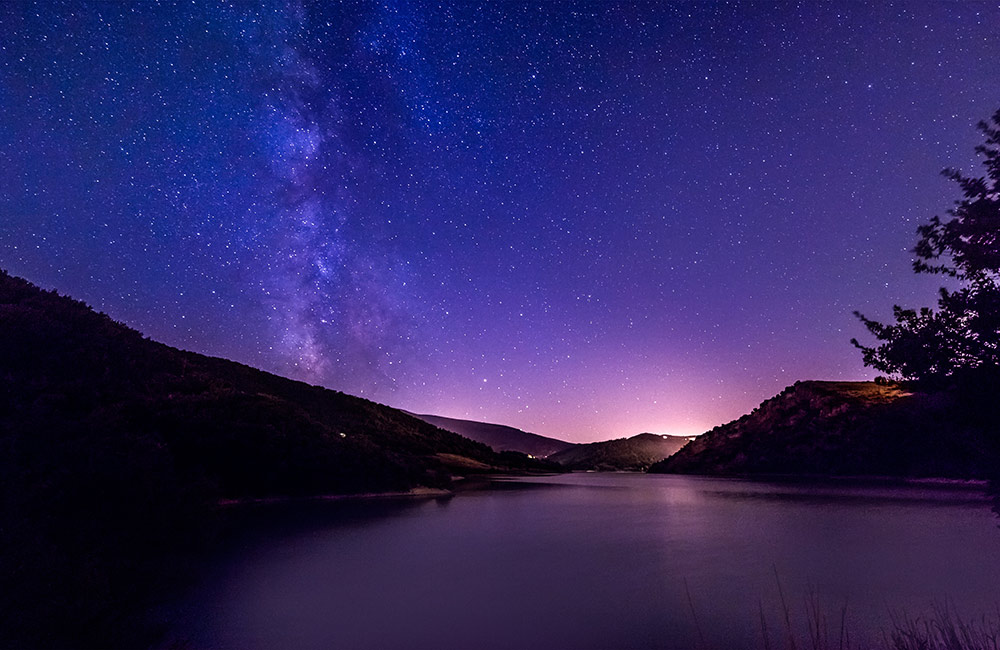
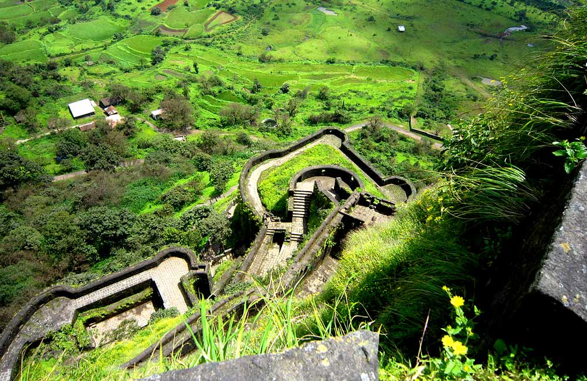

Places to Visit in Lonavala:
Lonavala, a beautiful retreat away from the chaos of the city, is one of the most popular tourist destinations in Maharashtra. Often called the ‘Jewel of Sahyadri’ and the ‘City of Caves’, this hill station boasts of a spectacular setting that includes lush green valleys, stunning waterfalls, serene lakes and remarkable caves. The myriad places to visit in Lonavala that include historical sites, natural wonders, religious attractions, etc. never fail to impress visitors.
- Tiger’s Leap, Lonavala

Tiger’s Leap is a prime tourist attraction that sits in the lap of nature at a height of 650 metres above sea level. Interestingly, this vantage point has been named so because of its shape that resembles a tiger taking a leap into the valley. It is frequented by adventure seekers who indulge in trekking and hiking here.
This beautiful site with an echo point and a stream flowing nearby offers stunning views of the valley below that attract vacationers in large numbers. You can always pack a picnic lunch and head to this place to spend some quality time with your loved ones.
Check out our blog on the best things to do in Mumbai for free for some great ideas.
- Location: Near I.N.S. Shivaji Base, Lonavala
- Timings: 24×7; every day
- Entry Fee: Free entry
- Pawna Lake, Lonavala

Pawna Lake, surrounded by spectacular landscape, is a popular picnic and camping spot in Lonavala. This artificial lake is formed by the impounded water of Pawna Dam that provides a perfect escape into nature’s arm. The natural beauty of this place, along with the distant view of Lohagad Fort, Tikona Fort and Tunga Fort, makes for a great backdrop for memorable pictures. While picnicking here, you can avail the facility of motor and row boating that adds to its overall appeal.
While monsoon is the best time to visit this place that abounds with incredible sights, you come here during the winter season as well to enjoy barbeques by the lake.
- Location: Pawna Dam, Lonavala
- Timings: 24X7
- Entry Fee: Free
- Lohagad Fort, Lonavala

Another architectural marvel of the Marathas is the Lohagad Fort (Iron Fort) that commands a visit while you are in Lonavala. The hill fort acquired its name because it was considered as an impregnable edifice due to its strategic location at a height of 1050 metres above sea level. This historical site has witnessed the rise and fall of many dynasties over the centuries, including Nizams, Marathas and Mughals.
Not only is it popular among history buffs and nature enthusiasts, but also adventure seekers because of trekking that has to be done to reach the fort, where you can spot the Vinchu Kata – a series of hills resembling Capricorn.
- Location: Lohagad Wadi, Lonavala
- Timings: 9 am to 6 pm
- Entry Fee: Free
Back To Home